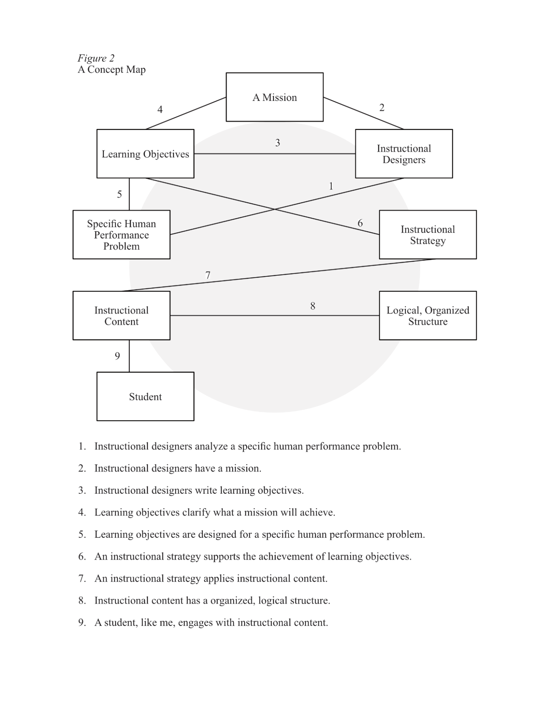

To Map Knowledge:
A Trend in Instructional Science
Introduction
In the field of Instructional Science and Technology (IST), there are a few trends that can be traced from today backwards in history. For example, distance and electronic learning (e-learning) might be traced backwards to the 1980s. When, in the U.S., M. David Merrill proposed that a computer program could provide intelligent suggestions about course design (Merrill, 1987). Or when, in the U.K., Diana Laurillard discussed principal forms of computer-aided learning (Laurillard, 1987). In the 1950s, educational television was considered to be the cutting-edge distance learning and e-learning technology (Reiser, 2025). Of course, e-learning seems a relatively recent innovation when compared to distance learning. Before the term distance learning was used, such learning programs were called correspondence courses; and these programs are quite old.
Another trend is of particular interest, for this trend has concerned itself with representations of knowledge. Within the field of IST, the word learning means the acquisition of attitudes, knowledge or skills (KSAs), achieving a performance outcome over time and with effort (Rothwell et al., 2016, pp. 14, 138). As a result, many academics have studied representations of knowledge. In the 1950s, Benjamin S. Bloom (1956) distinguished three domains into which learning objectives could be categorized. From Bloom’s point of view, affect was emotional or socio-emotional ability. Cognition was knowing or comprehending a subject matter. And psychomotor skill was the ability to move and execute performance (pp. 7-8). Bloom’s work has become famous. And he is considered an exemplar of the social movement that reconsidered how KSAs were represented in the mind. In the 1960s, this social movement became known as constructivism.
Contemporary constructivists understood that a learner made progress over time, progressing from misconception / misunderstanding to understanding (Athey, 1990, p. 31). Another pioneer of constructivism, Jean Piaget (1969) provided valuable descriptions of learning techniques, especially pedagogical techniques (as cited in Athey, 1990, p. 32). By Piaget’s work, constructivism held that, in the mind, new concepts were acquired by relating existing cognitive structures to experiences (Athey, 1990, pp. 32-33). Many agreed that constructivism improved teaching and learning. David P. Ausubel and Donald Fitzgerald (1961) critiqued traditional, receptive learning strategies, especially when drill and practice neglected to relate one learning scenario to another (p. 500). Ausubel and Fitzgerald promoted strategies that related prior knowledge to new knowledge, actively making meaning. Jerome Bruner (1960) explained the variables that affect the quantity and structure of knowledge (as cited in Ausubel & Fitzgerald, 1961, p. 501). So, in the 1960s, constructivism showed that cognitive variables affected achievement, transfer and problem-solving (pp. 505-506).
The History of Knowledge Maps
Knowledge mapping techniques emerged in the 1970s while instructional scientists were reconstructing learning strategies according to constructivist tenets. Universities had begun to offer courses on learning itself. “Learning-to-learn” courses were intended to teach students critical academic skills like writing and note taking (Hounsell, 1979, p. 456). Knowledge maps, such as the concept map, were understood to be an instructional technique, which aligned with contemporary constructivist tenets.
In both the U.K. and the U.S., knowledge mapping was implemented in order to provide academic support. In the U.K., Tony Buzan (1974) advocated for non-linear notes, a technique which has become known as mind mapping. He argued the mind does not just describe the world in sentences. The mind interprets our five senses. Traditionally, writing linearly conveys meaning, sentence by sentence; but the five senses do not. It follows that a “linear presentation [of knowledge]... in many instances is a disadvantage.” Or at the very least, strict linearity is superfluous (p. 91). In the U.S., Joseph D. Novak devised a hierarchical mapping technique, following directly from David P. Ausubel’s work on meaningful learning. Novak (2002) reiterated Ausubel’s early definition of learning: Learning was defined in terms of misconception and (in)valid proposition. In other words, students didn’t know, had a limited understanding, or they misunderstood. Thus, to Novak, learning simply meant the replacement of misunderstanding with understanding. Still, it “is not easy,” Novak wrote (p. 555).
Both Buzan and Novak adopted an instructional technique, designed to show knowledge. Novak liked to represent knowledge in terms of concepts and valid propositions (Novak, 2002, p. 552). Early on, he acknowledged there was a valuable distinction between declarative knowledge and procedural knowledge. Yet, at least, for meaningful learning in science, he and his colleagues decided a conceptual understanding would be sufficient for the representation of learning (Novak, 2002, p. 553). In contrast, Buzan focused on memory, specifically the value of good notes during recall. He defined “key recall words and phrases,” saying that strong nouns and verbs are best (Buzan, 1974, p. 78).
Both Novak and Buzan specified a particular format. Buzan popularized mind maps (see figure 1), describing a collection of key words organized around a central image. Words were connected to the central idea with lines. And Buzan advocated for creativity (e.g. colors, drawings and outlines). Novak popularized concept maps (see figure 2), describing a hierarchical structure. A main word or phrase was emphasised, and subordinate concepts were connected with lines, then subordinate concepts might have subordinate concepts, and so on. Crucially, concept maps required relationships between concepts to be defined. So the lines that related concepts were labeled.
Both Joseph Novak and Tony Buzan developed techniques to create graphic representations of knowledge. Buzan popularized the mind map, describing it as a collection of key words organized around a central image. Words were connected to the central idea with lines. And Buzan advocated for the creative use of colors and drawings. Novak popularized the concept map, describing it as a hierarchical structure constructed from logical propositions. A main word or phrase was selected, and subordinate concepts were connected to it with labeled lines, then subordinate concepts might have subordinate concepts, and so on. Crucially, concept maps required relationships between concepts to be defined. So the lines that related concepts were labeled.
Perhaps, because knowledge mapping emerged while e-learning was growing rapidly, even early mapping techniques took advantage of digital tools. From the outset, Buzan popularized his mind mapping technique by appearing on broadcast television, specifically programming by the British Broadcasting Corporation. Novak began concept mapping, using paper and pen; then Post-Its were used. Still, as mentioned earlier, computer-aided learning emerged during the 1980s. So by the 1990s, Novak and his colleagues augmented concept mapping activities with both computer programs and the internet (Cañas et al., 2001).

Modern Knowledge Maps
In the 21st century, knowledge maps will integrate with digital media. Martin Davies (2011) conducted a review of knowledge mapping, attempting to predict future use, and advocating for mapping activities. In his review, Davies compared and contrasted argument mapping, concept mapping, and mind mapping. Like other knowledge maps, argument maps visualize the structure of knowledge. So the term argument was deconstructed into constituent ideas, specifically “claims,” “objections” and “rebuttals” (p. 286). To map an argument, Davies placed statements into boxes; and he connected these boxes with lines labeled “because” or “but.” Lines of thought lead to a terminal node, which contains evidence (a hyperlink to a newspaper article or even a statistical measure). Hence, Davies wrote, an argument map emphasized both causal inference and grounded reasoning (p. 287).
Davies (2011) mused about the future of computer-aided knowledge mapping. If all the elements of a map could contain hyperlinks, he would ask students to link evidence or justification to their concepts and propositions. Really, Davies proposed software not entirely unlike the popular website Wikipedia. Therein, specific words/phrases are hyperlinks to articles, which explain the word/phrase. As well, to promote meaningful learning, Davies noted that mapping software, alone, would not be enough to promote learning to meaningful learning. He called for a learning “sequence” or protocol, likening such a protocol to systematic approaches to essay writing (p. 295). Joseph Novak would have approved; for Novak’s contribution to the development of CmapTools, a computer program designed and maintained by the Florida Institute for Human & Machine Cognition. CmapTools guided students’ construction of digital concept maps. These digital maps were collaboratively worked on by both students and faculty. With help from the IBM corporation, CmapTools was deployed on a telecommunications network, connecting university programs in Latin America and their conspecific programs in Florida, in the United States (Cañas et al., 2001).
Conclusion
The utilization of knowledge maps is a trend in Instructional Science and technology. Knowledge maps emerged when the constructivist movement of the 1960s prompted the revision of traditional instructional techniques. Since then, knowledge mapping has continued to develop. Mapping has been found to improve the metacognition of undergraduate students (Taber, 1994, p. 288). And modern research suggests that scholars should continue by integrating mapping activities into collaborative learning (Chan & Yang, 2023, p. 6691). The work of Laurie O. Campbell is a good example of modern research. Campbell (2022) designed a course-long, structured peer-review process, asking students to assess concept maps. Concept mapping both solidified understanding and “fostered additional development.” It seems likely that future scholarship will integrate collaborative knowledge-mapping into e-learning. Such activities will contribute to meaningful learning, both for the students themselves and for the scholars who study IST.
References
Athey, C. (1990). Extending Thought in Young Children, A Parent-Teacher Partnership. Paul Chapman.
Bloom, B. S., Engelhart, M. D., Furst, E. J., Hill, W. H., & Krathwohl, D. R. (1956). Taxonomy of Educational Objectives. Longmans Green and Co.
Buzan, T. (1974). Use Your Head. Guild.
Campbell, L. O. (2022). Learner Development Through Serial Concept Mapping. Knowledge Management & E-Learning, 14(2), 170-185.
Cañas, A. J., Ford, K. M., Novak, J. D., Hayes, P., Reichherzer., T. R., & Suri, N. (2001). Online Concept Maps: Enhancing Collaborative Learning by Using Technology with Concept Maps. The Science Teacher, 64(4), 49-51.
Chan, Y., & Yang, J. C. (2023). Concept Mapping in Computer Supported Learning Environments: A Bibliometric Analysis. Interactive Learning Environments, 31(10), 6678-6695.
Davies, M. (2011). Concept mapping, mind mapping and argument mapping: what are the differences and do they matter? Higher Education, 62(3), 279-301.
Hounsell, D. (1979). Learning to Learn: Research and Development in Student Learning. Higher Education, 8(4), 453-469.
Laurillard, D. (1987). Computers and The Emancipation of Students: Giving Control to The Learner. Instructional Science, 16(1), 3-18.
Merrill, M. D. (1987). An Expert System for Instructional Design. IEEE Expert, 2(2), 25-37.
Novak, J. (2002). Meaningful Learning: The Essential Factor for Conceptual Change in Limited or Inappropriate Propositional Hierarchies Leading to Empowerment of Learners. Science Education, 86(4), 548-571.
Rothwell, W. J., Benscoter, B., King, M., & King, S. B. (2016). Mastering the Instructional Design Process. Wiley.
Taber, K. S. (1994). Student Reaction on Being Introduced to Concept Mapping. Physics Education, 29(5), 276-281.